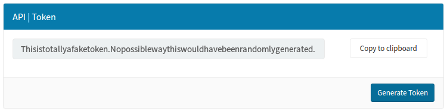

Connect a websocket client to Pareto
Access the real-time contextual data feed on your own server or PC
Have a Pareto account and want to access the real-time contextual data feed on your own server or PC to build your own application? You're in the right place. Here we'll show you how to generate an API token and connect a socket.io client to Pareto. We'll also show how you can feed the data into a local instance of our open source hlc-server which provides additional features and APIs.
Wait, what's Pareto?

Pareto is our enterprise cloud platform which provides the convenience and scalability of SaaS.
Visit getpareto.com Log in to your account
Generate an API token
From your Pareto dashboard, navigate to the Accounts page which will include the option to generate an API token, as shown below. You'll need this token in the next step. And remember to protect your API token — it's private!
Test your token right here and now
This webpage includes a Javascript websocket client which will connect to Pareto and display the real-time events below when you connect with your API token.
| Property | Value |
|---|---|
| {{property}} | {{value}} |
Create and run a socket.io client
You can create a socket.io client in a few lines of code using Node.js (which if you don't have installed, you can download here). Create a file called server.js and paste in the following code, inserting the API token you generated in the previous step:
var socketioClient = require('socket.io-client');
var PARETO_TOKEN = 'paste_your_API_token_here';
var PARETO_URL = 'https://pareto.reelyactive.com';
process.env.PARETO_TOKEN = PARETO_TOKEN;
var socket = socketioClient(PARETO_URL, { query: { token: PARETO_TOKEN } });
socket.on('keep-alive', function(event) {
console.log(JSON.stringify(event, null, 2)); // Do something useful here
});
From the command line, in the same directory as the server.js file you just created, install the socket.io-client package by running npm install socket.io-client.
Once the installation completes, you can run your code by entering node server.js and should see events output to the console.
In many cases, that might be all you need! Don't forget that you can listen for appearance, displacement and disappearance events in addition to the keep-alive specified in the code above.
Run a local hlc-server instance
Our open source hlc-server can ingest the event feed which can in turn be consumed via:
- REST APIs
- a socket.io client — without requiring an API token
- visualisations such as the bubblescape
Integration is just as easy. Copy the following code into your server.js file, again inserting the API token you generated in the first step:
var server = require('hlc-server');
var socketioClient = require('socket.io-client');
var PARETO_TOKEN = 'paste_your_API_token_here';
var PARETO_URL = 'https://pareto.reelyactive.com';
process.env.PARETO_TOKEN = PARETO_TOKEN;
var socket = socketioClient(PARETO_URL, { query: { token: PARETO_TOKEN } });
var app = new server({
barnacles: {
delayMilliseconds: 1, // Respond immediately
historyMilliseconds: 10000, // Add 5 seconds to both to compensate
disappearanceMilliseconds: 15000 // for potential lag between servers
}
});
app.bind( { websocket: socket } );
From the command line, in the same directory as the server.js file you just created, install the hlc-server package by running npm install hlc-server and the socket.io-client package by running npm install socket.io-client.
Once the installation completes, you can run your code by entering node server.js and then point your browser to localhost:3001.
The hlc-server will provide a socket.io feed on localhost:3001 which can be consumed by beaver.js to build custom web applications.
What's next?
Learn more about events, build web apps with beaver.js, or return to the diyActive home page.
Event data overview Build web apps with beaver.js Return to diyActive